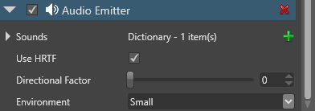

頭部伝達関数 (HRTF) オーディオ
頭部伝達関数 (HRTF) は、サウンドが 3D 空間内の特定のポイントで生成されているようにしてバイノーラル オーディオを合成する、高度なオーディオ表現手法です。標準の空間オーディオより現実に近いオーディオが提供されます。たとえば、HRTF を有効にすると、プレイヤーはキャラクターが自分より上にいるのか下にいるのかを聞き分けることができます。没入感が増すので、VR アプリケーションに特に適しています。
HRTF を使用するためにプレイヤーが特別なハードウェアを装着する必要はありません。ただし、スピーカーよりヘッドホンの方が、はるかに良い効果が得られます。
次のビデオでは、HRTF オーディオの効果を実際にご覧に体験できます。
Note
現在、HRTF は Windows 10 でのみ使用できます。
HRTF を有効にする
HRTF を使用するには、最初に［Game Settings］アセットでグローバルに有効にした後、使用するエンティティで HRTF を有効にします。
1. HRTF をグローバルに有効にする
［Solution explorer］(既定では左下のペイン) で、［Assets］フォルダーを選択します。

［Asset view］(既定では下部のペイン) で、［Game Settings］アセットを選択します。

［Property grid］(既定では右側のペイン) で、［Audio Settings］の［HRTF support］を選択します。

ゲーム設定アセットの詳細については、「ゲームの設定」を参照してください。
2. HRTF をエンティティで有効にする
HRTF を有効にするサウンドを含むエンティティをオーディオ エミッターで選択します。
［Property grid］(既定では右側) の［Audio Emitter］で、［Use HRTF］を選択します。

このエンティティから生成されるサウンドは、HRTF を使用するようになります。
Note
HRTF オプションは、このオーディオ エミッターから生成されるすべてのサウンドに適用されます。
変更できるプロパティなど、オーディオ エミッターの詳細については、「オーディオ エミッター」を参照してください。